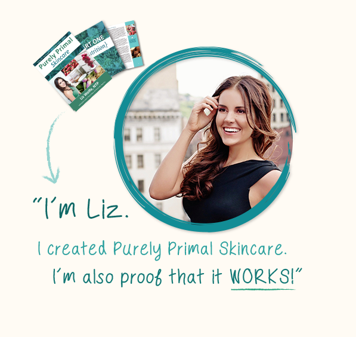

Purely Primal Skincare Guide Review - Does It Really Work ?

First impressions matter. No matter how flexible society becomes about accepting people and being open to new concepts and ideas, the first thought someone has when they meet another person means something. And because these first impressions mean so much, people put a lot of time, energy, and money into making sure they’re making the right first impression.
There are several ways a person can put their best foot forward. For many people, the first place they start is their clothes. Even though styles will vary from person to person, individuals find more success when they dress the way they want to be perceived. In addition to what clothes people wear, there are smaller things they can do to make good first impressions, like styling their hair certain ways or walking with confidence. While all these different options play huge roles in how people perceive each other, one aspect is often overlooked: The Skin.
Even though people want to have healthy, beautiful skin, it doesn’t often get the same attention as outfits, hairstyles, and fitness. However, caring for the skin plays just as big a role in perception as all the other items. The health of skin is actually more important than these other issues, because how beautiful the skin is often reflects the health of people. So, if someone wants to make the best first impression, the best way to do so is to make sure their skin is as healthy and beautiful as possible.
Already Decided?
That's great! Click the button on your right and take the action now.
Unfortunately, the skin care products on the market today struggle to provide users with the quality they need to have truly healthy skin. For information on how to care for the skin properly, people often have to go to a doctor or skin care professional, which takes time and money. For those who want to get the insight and advice of a professional when it comes to their skin, there’s Purely Primal Skin Care Guide.
The Purely Primal Skin Care Guide is a book that walks readers through an in depth look at the skin. Not only does this guide explain what makes skin healthy, it shows users how they can rejuvenate their skin health, so they have the radiant, youthful skin they’ve always wanted.
What is the Purely Primal Skincare Guide?
Offering more than 200 pages that focus completely on the health and wellness of the skin, Purely Primal offers readers something they wouldn’t be able to find anywhere else. Even though most people want to know how to keep their skin, hair, and teeth healthy and beautiful, they can’t afford the products and procedures that claim they can provide these benefits. More importantly, most people can’t afford the personal consultation so many skin care experts offer. This is why Purely Primal is such an important resource.
Purely Primal offers users the same information that experts in the skin care industry give their patients. But, instead of offering this information at an exorbitant price for a one time sit down, Purely Primal is a guide that users can refer to whenever they have a question about the health of their skin, hair, and teeth. More importantly, Purely Primal is able to transform the bodies of those who use it, giving them the healthy, radiant look they’ve always wanted.
As mentioned above, there are many products on the market today that claim they can give users the beautiful, clear skin they want or the healthy hair and teeth they need. However, often these products are filled with ingredients that often cause more harm than good. Purely Primal is a guide that uses natural and safe methods to strengthen and restore the health of users. With the three step, comprehensive approach offered by Purely Primal, users will be able to improve the beauty of their skin, as well as their nails, hair, and teeth, with all natural and safe methods.
Benefits of the Purely Primal Skin Care Guide
Many of the problems that people face with their skin, hair, nails, and teeth can be solved by making simple adjustments in their lifestyles. Unfortunately, while the way to improve the health is simple, the information is kept a secret, only being offered to those who have the money to pay experts their high fees.
One of the biggest benefits of Purely Primal is that the guide offers all the information readers need to transform their bodies. The information presented in Purely Primal is something that many people have paid hundreds of dollars for, because it’s information that truly works.
Even though many of the issues people face with their skin and hair can be solved by making the minute lifestyle changes described in Purely Primal, there are still some areas of beauty health that require products to fix. The problem is, as mentioned above, so many health and beauty products on the market are packed with ingredients that harm the body.

Another benefit of Purely Primal is that it presents products that can cleanse, nourish, and support skin health. The products listed by Purely Primal are completely safe and have been proven to offer better benefits than the majority of other products on the market.
Looking naturally beautiful is great, and definitely something that the Purely Primal guide will help users achieve. However, sometimes people want to have a little extra pop when it comes to their looks, whether it’s through makeup, hair dyes, or other products.
Purely Primal also offers readers information on alternatives to the makeups and dyes that so many people can’t live without. Most importantly, these alternatives are safe and will give users the looks they want, without putting the health of their skin and hair at risk.
Included with the Purely Primal Skin Care Guide
Everyone will have different needs when they purchase the Purely Primal Skin Care Guide, whether it be to help get flawless skin, healthy hair, white teeth, or healthy nails. Because the writers of Purely Primal knew that there would be different needs for every reader, they broke the guide into three distinct parts.
The three parts available in Purely Primal are:
Nutrition
Digestion
Topical
Each section of Purely Primal goes in depth into the intricacies of each topic, making sure users understand why the experts recommend the different steps for reaching true health.
While the Purely Primal guide is more than enough to help transform readers lives, for a limited time the guide comes with several free bonuses. The first bonus is a book on easy recipes that incorporates the nutritional and digestive aspects described in the guide, helping users reach their true health and beauty potential. The second bonus is a resource guide with online private access, as well as access to the Purely Primal Facebook group, which will provide extra information and support.
The last bonus offered by Purely Primal, at no extra charge, is continuous lifetime updates. As more information becomes available about the various topics in Purely Primal, the writers will update the guide and make it available to those who have purchased it before. These updates will make it easier for users to stay on top of their health, wellness, and beauty.
What Are You Waiting For?
Your Purchase is Backed Up by 30 Days Money Back Guarantee. If You Don't Like The Product, Give It Back And You Will Be Refunded With No Questions Asked!
Purchasing the Purely Primal Skin Care Guide
Purely Primal is currently available for the low price of $37. As described above, this price includes a long list of bonuses, as well as the detailed guide that will walk users through everything they need to know to renew and revitalize their skin, hair, teeth, and nails. The Purely Primal Skin Care Guide is available for purchase on the company’s website (www.PurePrimalSkinCare.com), where more detailed information about the product, as well as the purchase and download links, can be found.

Related Post
Bow Legs No More - Looking for a Permanent Remedy for Bow Legs Without the Need for Surgery?
 Beauty/
Beauty/
Skin Whitening Forever - How To Whiten Your Skin Naturally
 Beauty/
Beauty/
Ageless Body System - HOW TO BE INSTANTLY AGELESS?

Recent Post
QUIT SMOKING MAGIC REVIEW
 Addiction/
Addiction/
ALCOHOL FREE FOREVER - HOW TO QUIT DRINKING TODAY FROM THE PRIVACY OF YOUR HOME
 Denatal Health/
Denatal Health/
Dentist Be Damned How To Get Rid Of Toothache Review - Does It Really Work?
 Dental Health/
Dental Health/
Tooth Defender 100% Natural Oral Care Review - Does It Really Work?